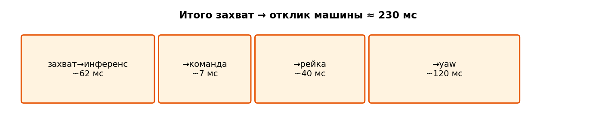

Задержки и нагрев#
Контроллер всегда работает по устаревшей картине дороги.
При \(v = 22\) м/с задержка \(0.23\) с — это уже около 5 м пути. Без упреждения (fp_steer_delay_s) контур систематически рулит туда, где машина была, а не туда, где она есть.
{kind=link}

Рис. 13 Разбейте сквозной путь на измеримые отрезки — тогда сессии можно честно сравнивать.#
Метрики#
cd app/src/main/scripts
python3 latency.py /path/to/session
величина |
смысл |
|---|---|
|
только |
сквозное зрение |
|
съёмка → lane_keep |
до публикации желаемого пути или SWA |
съёмка → steer (свежие) |
до команды на топике актуации (с фильтром устаревших) |
Предупреждение
Сырой controls/steer содержит переиздания по шасси с устаревшим vision_ts. Для сквозной задержки пользуйтесь фильтром из latency.py (та же идея, что в колонках latency/ для PlotJuggler).
Сравнение сессий#
сессия |
условия |
Гц |
съёмка→LK |
|---|---|---|---|
|
без YOLO |
11.4 |
~69 мс |
|
без YOLO |
9.8 |
~81 мс |
|
без YOLO, окно троттлинга |
8.5 / ~3 в провале |
87 мс, максимум ~0.8 с |
|
YOLO по COCO |
7.2 |
88 мс, тяжёлые хвосты |
YOLO на том же SoC конкурирует с Supercombo. Отдельно от этого, многоминутный тепловой троттлинг проявляется как растущий infer_ms и обваливающийся темп.

Рис. 14 Толковать качество контроллера можно только на окнах, где зрение оставалось здоровым.#
Темп задаётся периодом камеры, а не объёмом работы#
Вот результат, который удивил всех, кто на него смотрел, и ради которого этот раздел существует.
Пусть один цикл работы — warp плюс инференс — занимает \(W\) миллисекунд, а камера отдаёт кадр каждые \(T\) мс. Конвейер держит буфер на один слот с самым свежим кадром и подхватывает его в тот же момент, как освободился, — то есть по своей воле не простаивает. И всё равно достижимый темп не равен \(1000/W\): цикл может начаться только когда кадр есть, поэтому на один обработанный кадр уходит \(\lceil W/T \rceil\) периодов камеры.
Вся история — в этом округлении вверх. Из него следует, что срезать 1 мс работы может не дать ничего, а переход через кратное \(T\) разом добавляет треть темпа.
import math
def achieved_hz(work_ms, camera_period_ms):
"""One-slot latest-frame buffer, no idling: work is quantised up to whole camera periods."""
periods = math.ceil(work_ms / camera_period_ms)
return 1000.0 / (camera_period_ms * periods), periods
# Camera periods as measured, not as requested: asking for 20 fps produced 44 ms, asking for 30 gave 33.
print(f"{'period':>8} {'work':>7} {'periods':>8} {'rate':>8} {'wait':>7}")
for T, work in ((44.0, 59.0), (33.3, 59.0), (33.3, 52.6), (33.3, 40.0), (33.3, 32.0), (16.7, 40.0)):
hz, n = achieved_hz(work, T)
print(f"{T:>6.1f} ms {work:>5.1f} ms {n:>8} {hz:>6.1f} Hz {T * n - work:>5.0f} ms")
Сравните вывод с тем, что мы действительно измерили:
конфигурация |
предсказание |
измерено |
|---|---|---|
период 44 мс, работа 59 мс |
2 периода → 11.4 Гц |
11.29 Гц, 2.02 кадра камеры на обработанный |
период 33 мс, работа 52.6 мс |
2 периода → 15.0 Гц |
13.24 Гц |
Первая строка — модель, работающая в точности. Вторая на 12 % ниже предсказания, и этот зазор — честный незакрытый конец: значит работа иногда заходит в третий период, что хвост распределения подготовки кадра (медиана 7 мс, среднее 11.4, p95 35.7) вполне делает.
Почему это важно для решений об оптимизации
Отсюда видно, какие сокращения имеют смысл. При периоде 33 мс и работе 52 мс экономия 19 мс уводит вас в один период и поднимает темп с 15 Гц до 30, а экономия 10 мс не даёт ничего. Поэтому инференс в половинной точности (около 15–20 мс из 45.6) — единственный оставшийся рычаг, а срезание 2.5 мс с интервала опроса — нет.
Куда уходит время и что осталось срезать#
Измерено на ночном заезде длиной 28 минут при 13.24 Гц. Каждое число ниже — медиана из latency.py, а
накопленная колонка — то, что этот инструмент печатает; это стоит держать раздельно, потому что длительности
этапов и накопленные метки — разные измерения, и складываться в точности они не обязаны.
этап |
длительность |
накопленно от съёмки |
дёшево ли улучшить? |
|---|---|---|---|
подготовка кадра (warp) |
7 мс (среднее 11.4, p95 35.7) |
джиттер да, величину нет |
|
инференс Supercombo |
45.6 мс (p95 53.8) |
54 мс до выхода модели |
да — половинная точность |
выход модели → команда на руль |
21 мс (p95 47) |
79 мс до команды (p95 111) |
почти нет |
передача CAN пандой |
~10 мс (свой таймер 10 мс, не помечается) |
~89 мс до провода |
нет — HCA нужен строгий такт 100 Гц |
ожидание следующего кадра камеры |
см. квантование выше |
да — частота камеры |
Всё, кроме инференса и ожидания кадра, складывается примерно в 38 мс, и запаса там нет.
# What the delay costs in metres, and what half precision would buy if it gives the usual 1.5-2x here.
TO_COMMAND_MS = 79.0 # measured capture -> steer command
TO_WIRE_MS = 89.0 # plus the panda transmit timer
for v in (10.0, 15.0, 22.0):
print(f"at {v:>4.0f} m/s the car travels {v * TO_WIRE_MS * 1e-3:>4.2f} m before the command reaches CAN")
print()
for infer in (45.6, 30.0, 25.0):
work = 7.0 + infer
hz, n = achieved_hz(work, 33.3)
to_wire = work + (TO_WIRE_MS - 52.6) # everything after the model output is unchanged
print(f"inference {infer:>4.1f} ms -> work {work:>4.1f} ms -> {n} camera period(s) -> {hz:>4.1f} Hz, "
f"capture->wire {to_wire:>4.0f} ms")
Как отличить поздний кадр от медленного#
До 6 августа 2026 самой ранней меткой на кадре была capture_ts_ms, из-за чего два совершенно разных отказа
выглядели одинаково: кадр, пришедший через 40 мс после экспозиции, и кадр, простоявший 40 мс в буфере, пока
инференс был занят. vision/lanes теперь несёт ещё submit_ts_ms, pickup_ts_ms и frames_dropped, а
latency.py их печатает.
Диагноз — таблица два на два:
мало потерь |
много потерь |
|
|---|---|---|
короткая доставка |
здоров |
инференс не успевает |
долгая доставка |
камера или ISP опаздывают |
и то и другое, начинать с камеры |
Именно это различение и нужно дневным зависаниям — эталон старше 300 мс 15.9 % времени одного бега, с одной дырой в 75 секунд — и до сих пор его сделать было нельзя.
phone/stats#
Раз в секунду бег может нести cpu_pct, cpu_app_pct, thermal_status, температуры, cpu0_freq_khz.
Совмещайте их с latency/vision/* в PlotJuggler, когда утверждаете «нагрев», а не «плохой MPC».
Требования к отчёту (курс)#
vision_traffic: falseпри сравнении контроллеров.phone_stats: trueна учебных заездах.Всегда сообщайте темп и сквозную задержку зрения рядом с CTE.
Не срезайте
fp_steer_delay_sдо суммы медиан без прогона в замкнутом контуре — динамике нужен запас (модель машины).
Задание#
Воспроизведите таблицу выше на выданных вам бегах (или объясните, почему в сессии нет нужных метк времени). Обведите каждое окно с темпом \(< 9\) Гц и запретите его для парето-графиков контроллера.
Дальше: Беги и офлайн-анализ